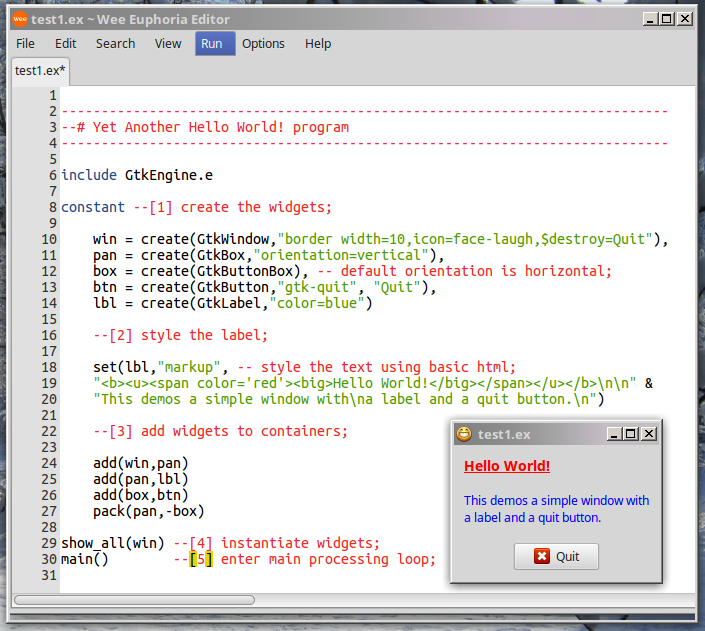
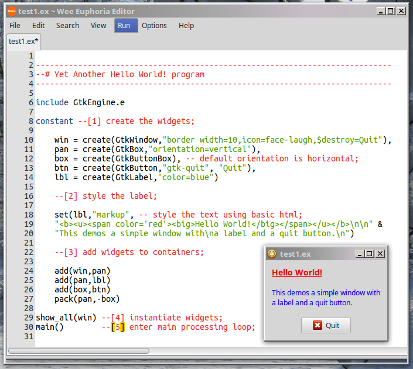

Please browse this page using BEAR.ex if possible. That will allow
you to click on a link to a program, view the source, and edit or run it,
all within the BEAR window!
The GtkFixed widget lets you lay out things the Windows™ way, which is - no surprise -
the wrong way.
Quote from the GTK docs:
"For most applications, you should not use this container! It keeps you from having to learn about the other GTK+ containers, but it results in broken applications. With GtkFixed, the following things will result in truncated text, overlapping widgets, and other display bugs:
Themes, which may change widget sizes.
Fonts other than the one you used to write the app will of course change the size of widgets containing text; keep in mind that users may use a larger font because of difficulty reading the default, or they may be using Windows or the framebuffer port of GTK+, where different fonts are available.
Translation of text into other languages changes its size. Also, display of non-English text will use a different font in many cases.
In addition, the fixed widget can't properly be mirrored in right-to-left languages such as Hebrew and Arabic. i.e. normally GTK+ will flip the interface to put labels to the right of the thing they label, but it can't do that with GtkFixed. So your application will not be usable in right-to-left languages.
Finally, fixed positioning makes it kind of annoying to add/remove GUI elements, since you have to reposition all the other elements. This is a long-term maintenance problem for your application.
"
This is good advice. If you choose to ignore it, you'll have to do a lot of extra work, only to find that users are upset that your programs
don't work as they expect well-behaved programs to work.
Window Icons
Window Icons are the small icons that appear on the titlebar (see mongoose at far left), but where
these appear, and whether they appear at all, depends upon the theme in use. If you don't see
these in the demos, try changing your window theme.
Icons can be made from .jpg, .png, .gif, etc... files, gtk-stock items, or named icons from your
current theme. Run test39 to see stock items, and
examples/icons.ex to view and enumerate available theme icons
in themeicons.txt.
Fonts
There are several ways to modify fonts. For text controls, such as labels:
For the entire control:
set(ctl,"font","Courier 12") -- set font face and sizeset(ctl,"font","36") -- sets size only, keep user's font preferenceset(ctl,"font","italic") -- italicises user's preferred font. Try also 'bold', 'bold italic', etc.
You can specify more than one font. Gtk will use the first one it finds on the computer,
so put your preference as the first on the list. If you want to specify a point size, put it last
on the list (not separated with a comma!)
set(ctl,"font","Century Schoolbook L, Serif, Purisa, Bitstream Charter")
set(ctl,"font","Purisa, Courier, Sans 18") -- first valid font will be shown in 18pt
To mark up portions of the text:
set(ctl,"markup","This is some <b>marked-up</b> <i>text</i>") -- styling text using a subset of HTML markupset(ctl,"markup","<span font='Sans 24' color='red'>Hello</span>") -- selecting font style and size using markup
See Pango Markup for details on the available markup attributes.
For other controls, such as buttons, the appearance is determined by the chosen window theme.
In certain situations where you need more control, consider using CSS to change fonts. The CSS can be loaded either from a standard *.css file, or inline in your program.
Example: test72 and mystyle.css
The GTK docs have some detailed info on css options.
Font Choosers
When writing a program which uses a GtkFontButton, GtkFontChooser or GtkFontDialog, you will
probably want to have some control over which fonts are shown in the list of available fonts.
You can do this by writing a simple filter function to examine the font names and/or font face
names, and returning TRUE if that font should be shown in the dialog, or FALSE if not.
As an example, suppose you want only mono-spaced fonts
to be shown, write the simple filter function:
function MyFontFilter(FontFamily family)
returnget(family,"is monospace")
end function
Then connect the font button or font dialog's filter function to your filter routine:
In the transition to using CSS to control GTK widget appearance, some of the frame attributes have been lost,
meaning that the style settings (raised, sunken, etc) don't have any effect.
Therefore, if the exact appearance is important, you may have to use both the old-style settings plus the
new CSS styling below.
CSS
With CSS, you can create some interesting effects, such as creating decorative backgrounds, rounded corners
on buttons and frames, and 'animations'.
You can load css from a separate file, or directly in-line as part of your Eu code. See test160.
An alternative to css in some cases can be to use an ini file to control colors and styles
of specific widgets. See test153, test173
and initest2.
Colors
EuGTK has simplified GTK color managment. You can specify colors in
various ways - as hex values: #FF0000, quoted hex: "#FF0000",
as Red/Green/Blue strings: "rgb(255,0,0)" or "rgb(100%,0%,0%)"
or as Red/Green/Blue/Alpha strings: "rgba(255,0,0,0.5)" .
The simplest way, however, is by name: "red". The names used are
the xcolor names. See xcolors.txt.
Case doesn't matter.
Gtk Widget Colors
For normal GTK widgets, you can set foreground color, which generally applies to labels, etc.
and background color, which applies to windows, etc., but not labels, which have a
transparent background. Setting the background color for a container such as a GtkBox
does nothing, as these containers have a transparent background,
but setting the box's foreground color will affect any labels added to the box.
You can determine what will happen by examining the 'properties' of a given widget,
as well as the widget's ancestor properties - or, you can do this the easy way: just
set a color and see what happens.
In addition to all the above ways to adjust GTK widget colors, you can also use
CSS!
Cairo Colors
When you are drawing with Cairo, you have several ways to choose a drawing color:
set(cr,"color","red") -- easy
set(cr,"color",#FF0000) -- hex value
set(cr,"color","#FF0000") -- quoted hex value
set(cr,"source rgb",1,0,0) -- to conform to the Cairo way. values are r,g,b in range 0=>1.0
set(cr,"source rgba",1,0,0,0.5) -- the Cairo way to set color and alpha. ranges are 0=>1.0
Note that you cannot use the "rgb(255,0,0)" or"rgba(255,0,0,1)" string formats when defining colors for Cairo.
These only work for GtkWidgets.
XML/GtkBuilder
GTK has a GtkBuilder object which can parse XML markup to create your user
interface. This means you can use Glade to build the interface visually, rather
than coding it by hand. You should try to update Glade so that it knows about
the latest GTK3 objects. Glade 3.16.1 seems to work ok, older versions, not so much.
Images can be created from almost any graphic file format: .jpg, .png,
.tiff, .gif, .xpm.... etc. simply by specifying the filename:
constant img = create(GtkImage,"~/demos/thumbnails/mongoose.png")
-- canonical_path() is automatically called to correct the filepath
This will create an image 'widget' which can be used exactly once,
and it will be created at the same size as the original image in the file.
Sometimes this is not what you want.
If you need to re-use an image without having to reload it repeatedly,
or if you need to change its size, then you should load the image into
memory as a pixbuf, and create your image(s) from that pixbuf (which can be re-used).
constant pix = create(GdkPixbuf,"~/demos/thumbnails/mongoose.png")
-- note that this call is to GdkPixbuf, not GtkPixbuf!constant img = create(GtkImage,pix)
Notes: When calling create(GdkPixbuf,...)
If the above create() line contains only a filename
a pixbuf is returned at the natural size of the image file
If one number follows the filename
the image will be scaled to
that width (original height x width ratio is retained)
If two numbers follow the filename, (height x width)
the image will be stretched to those dimensions, predictably with ugly results,
unless you retained the h/w ration when figuring the new dimensions!
If three numbers follow the filename, the third must be 1 or 0
~ a.k.a. TRUE or FALSE
if TRUE, then the original h x w ration will be maintained, and the
image will be scaled to either h or w, whichever is smaller.
if FALSE, then results will be the same as in line (3) above
In addition, images can be created from GtkStock items (deprecated),
or from named icons.
When using named icons, you can specify a size for the icon, either as one of
the GTK_ICON_SIZE enums, or in pixels, or omit the size altogether:
You cannot (AFAIK) load named icons into GdkPixbufs. If you need to do this, convert the icon into a .png or .jpg,
using a graphic program such as the Gimp or icons.ex.
In EuGTK 4.10.0+, there's a simple utility to convert .xpm image files into
Euphoria includes. When imported as a normal include.e file, the image(s)
become part of the source code, and are bound into the executable, so you can distribute
a bound, shrouded, or compiled program without having to also distribute a number
of separate image files. See xpm_include_test.ex in the demos/examples folder.
TextView
Quote from the GTK docs:
"GTK+ has an extremely powerful framework for multiline text editing."
With power comes complexity, because it has to deal with multi-byte characters,
different text directions, input methods, fonts, etc... See test59.
The good news; it does work, and for most purposes, it will not be
necessary to delve into the arcane commands too deeply.
After all, you are not likely to write a full-fledged rich-text editor
in Euphoria, since there are dozens of these things already freely available,
LibreOffice being just one.
The TextView widget might be used in programs which require simple mult-line text entry, but the GtkSourceView editor is both easier to implement
and more versatile if you want to edit source code.
SourceView Plugin
Beginning with EuGTK 4.10.0, there's a GtkSourceView plugin which can be added to
EuGTK. This will allow your program to view/edit syntax-colored source code for over 100
different programming languages.
Only the most important parts of the SourceView widget have been 'wrapped' so far,
but the control is already quite usable. I even use it for editing these
html pages. Additional features, such as auto-completion,
searching, etc. will be added as time permits.
 
